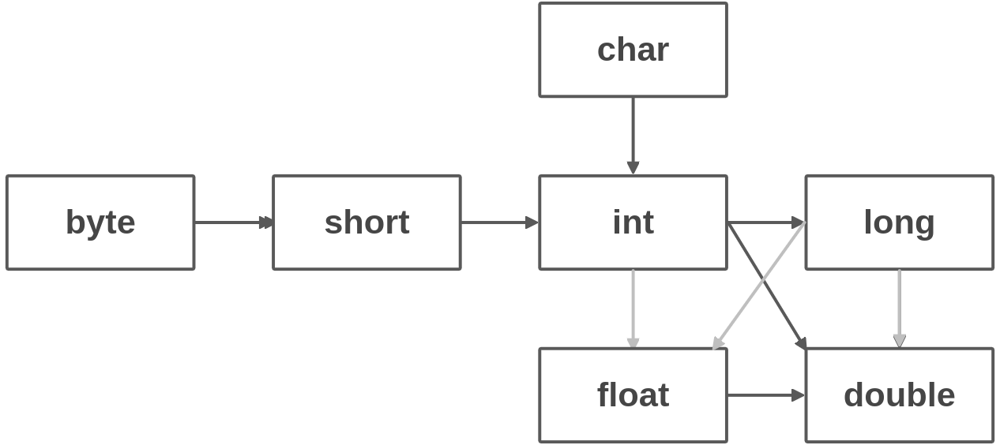

使用集成开发环境
Eclipse
新建项目
- File-New-Project
- 对话框中选择
Java Project

- 点击
Finish
Virtual Studio Code
- 安装扩展包
Java Extension Pack Ctrl-Shift-D根据提示生成launch.json配置文件F5运行程序
第一段Java程序
1 | // Welcome/Welcome.java |
程序解读
关键字
public称为访问修饰符（access modifier）用于控制程序其它部分对这段代码的访问级别。关键字
class表明Java程序中的全部内容都包含在类中。class后面是类名，命名规范类名首字母大写，建议使用骆驼命名法。源代码的文件名需与公共类名相同，并用
.java作为扩展名。main方法必须声明为publicJava中所有的函数都属于某个类的方法，因此
main方法必须有一个外壳类。每个Java应用程序都必须有一个main方法, 声明格式：1
2
3
4
5public class ClassName{
public static void main(String[] args){
program statements
}
}void表示这个方法没有返回值。如果main方法正常退出，Java应用程序退出代码为0。若想终止程序时返回其他代码，需要调用System.exit方法。每个程序块使用
{}括号包裹，每条语句使用;分号结束。输出语句使用了
System.out对象，并调用了println方法。.点号用于调用方法，通用语法为object.method(parameters)

易错点
- 需要注意大小写， 类名首字母大写
Welcome - 编译时只需指定类名
javac Welcome,不要带扩展名.java或.javac
注释
- 单行注释
// - 多行注释
/* */ - 文档注释
/** */可以生成文档1
2
3
4
5/**
* This is the first sample program
* @version 1.0 2016-09-03
* @author Spaceack
* /
数据类型
Java中规定8种基本类型（primitive type）4种整型，2种浮点型，1种表示Unicode编码的字符型，和一种表示真值的boolean类型。
Java整型
| 类型 | 存储 | 取值 | 科学 |
|---|---|---|---|
| byte | 1字节 | -128~127 | 2^7 |
| short | 2字节 | -32768~32767 | 2^15 |
| int | 4字节 | -2147483648～2147483647（错过20亿） | 2^31 |
| long | 8字节 | -9223372036854775808~9223372036854775807 | 2^63 |
- 长整型数值有一个后缀
L或l(4000000000L) - 十六进制数值有一个前缀
0x或0X(0xCAFE) - 八进制有个前缀
0（010 表示对应八进制中的8） - 二进制数值前缀
0b或0B（0b1001就是9） - 数字字面量加入下划线使之更易读：1_000_000（0b1111_0100_0010_0100_0000）表示一百万。
浮点类型
| 类型 | 存储 | 取值 |
|---|---|---|
| float | 4字节 | 约 ±3.40282347E+38F(有效位数6～7位) |
| double | 8字节 | 约 ±1.79769313486231570E+308(有效位数15位) |
float类型的数值有一个后缀f或F。没有后缀的浮点数默认为double类型表示溢出和出错情况的三个特殊的浮点数值
正无穷大，对应常量
Double.POSITIVE_INFINITY负无穷大,
Double.NEGATIVE_INFINITYNaN,
Double.NaNeg: 一个正整数除0的结果为正无穷大。计算0/0或者负数平方根的结果为NaN。
使用
Double.isNaN()方法判断是否等于Double.NaN。浮点数值表示使用二进制系统表示，会有误差。金融计算应使用
BigDecimal类。
char类型
使用单引号
''包裹,例如'A'是编码值为65所对应的字符常量。与被双引号包裹的"A"不同，它是包含一个字符A的字符串。char类型可以表示十六进制值，范围从
\u0000到\Uffff。例如\u2122表示注册符号™,\u03C0表示希腊字母π。转义序列
\u可以出现在加引号的字符常量或字符串之外（其他转义序列不可以）例如\u005B\u005D是[]的编码。1
public static void main(String \u005B\u005D args)
其它特殊字符转义序列
转义序列 名称 Unicode值 \b 退格 \u0008 \t 制表 \u0009 \n 换行 \u000a \r 回车 \u000d \“ 双引号 \u0022 \‘ 单引号 \u0027 // 反斜杠 \u005c System.out.println("\u0022+\u0022");的输出会是""吗？不是的， 会输出一个空字符串。需要小心注释中的
\u,// Look inside c:\users会产生语法错误，因为\u后面并未跟着4个十六进制数。
Unicode
码点（code point）: 指与一个编码表中的某个字符对应的代码值。
在Unicode标准中，码点采用16进制书写，并加上前缀U+,egU+0041是A的码点。
Unicode码点可以分成17个代码级别（code plane）。第一个代码级别称为基本的多语言级别(basic multilingual plane)， 码点从U+0000到U+FFFF,包括经典的Unicode代码。其余的16个级别码点从U+10000到U+10FFFF，包括一些辅助字符（supplementary character）
UTF-16编码采用不同长度的编码表示所有的Unicode码点。在基本的多语言级别中每个字符用16位表示，通常被称为代码单元（code unit）。辅助字符采用一对连续的代码单元进行编码。这样构成的编码值落入基本的多语言级别中空闲的2048字节内，通常被称为替代区域（surrogate area）。
在Java中，char类型描述了UTF-16编码中的一个代码单元。
强烈建议不要在程序中使用char类型。建议使用字符串作为抽象数据类型处理。
boolean类型
- boolean类型有两个值：
false和true,用来判定逻辑条件。 - 整型和布尔值之间不能相互转换。
变量
- Java中每个变量都有1个类型（type）,在声明变量时，变量的类型位于变量之前。以分号结束。
- 可以使用任何有意义的Unicode字符组成变量名。若想知道该Unicode字符是否可以用作变量名，可以使用
Character类的isJavaIdentifierStart和isJavaIdentifierPart方法来检查。 - 不要使用
$字符，它只用在Java编译器或其它工具生成的名字中。 - 建议逐一声明（各一行）可以提高程序的可读性。
- 变量名建议小写字母，多个单词组成的变量名从第二个单词开始首字母大写。
变量初始化
- 声明变量后，必须使用赋值语句对变量显式初始化。
- 变量的声明尽可能地靠近变量第一次使用的地方。
常量
- 利用关键字
final指示常量。eg:1
final int MAX_SIZE = 25;
- 关键字
static final可以设置一个类常量，允许一个类中的多个方法使用,常量还被声明为public， 其它的类也可以使用这个类常量：1
public static final int MAX_SIZE = 25;
- 被赋值后不能再更改。
- 建议常量名使用全大写。
运算符
算术运算符
| 符号 | 含义 | 使用 | 例子 |
|---|---|---|---|
| + | 加 | ||
| - | 减 | ||
| * | 乘 | ||
| / | 除 | 操作数都是整数时，表示整数除法，否则表示浮点数除法 | 50/2=7, 15.0/2=7.5 |
| % | 求余(取模) | 15%2=1 |
数学函数
1 | double x = 4; |
1 | // 使用静态导入，调用时省略Math |
类型转换

- 虚箭头转换可能会有精度损失
- 两个操作数，需要转换为同一类型才能运算。
强制类型转换
- 使用圆括号
()包裹要转换的目标类型，后面紧跟需要变换的变量名。1
2
3double x = 6.66;
int nv = (int) x; // 6 截断小数部分变为整型。
int rv = (int) Math.round(x); // 7 使用round 进行舍入运算，round返回类型为long1
2
3int x = 0;
x += 3.5; // 3
// 会执行强制转换，实际为(int)（x + 3.5）
自增运算符
“后缀”形式
1
2int n = 2;
int b = 2 * m++; // n is 3, b is 4;“前缀”形式, 先加1。
1
2int m = 2;
int a = 2 * ++m; // m is 3, a is 6建议不在表达式中使用
++，会让人迷惑。
关系和布尔运算符
| 符号 | 含义 | 举例 |
|---|---|---|
== |
相等 | |
!= |
不相等 | |
< |
小于 | |
> |
大于 | |
<= |
小于等于 | |
>= |
大于等于 | |
&& |
逻辑与 | |
| ` | ` | |
? : |
三元操作符 | condition ? expression1 : expression2 |
&&与||按照短路方式来求值
位运算符
| 符号 | 含义 | 举例 |
|---|---|---|
& |
and | |
| ` | ` | or |
^ |
xor | |
~ |
not | |
>> |
左移 | |
<< |
右移 |
&与|不按照短路方式来求值
- 使用掩码技术可以得到整数中的各个位。
1
2
3
4
5
6
7
8
9
10
11int n = 0b10000;
int fourthBitFromRight = (n & 0b1000) / 0b1000; // 0
int n = 0b11000;
int fourthBitFromRight = (n & 0b1000) / 0b1000; // 1
int n = 0b10000;
int fourthBitFromRight = (n & (1<<3)) >>3; // 0
int n = 0b11000;
int fourthBitFromRight = (n & (1<<3)) >>3; // 1括号与运算符级别

枚举类型
1 | enum Size {SMALL, MEDIUM, LARGE, EXTRA_LARGE}; |
字符串
- Java字符串就是Unicode字符序列。
- JAVA没有内置的字符串类型，而是使用标准库中的一个预定义类。
- 每个由双引号括起来的字符串都是String类的一个序列。
1 | String name = "Spaceack"; |
子串
- 使用
substring方法提取子串1
2
3
4String name = "Spaceack";
String subs = name.substring(0,5); //"Space"
- 子串长度 即 5-0 = 5拼接
- 使用
+号 拼接两个字符串 - 多个字符串使用某个定界符连接，可以使用
join静态方法1
String all = String.join("-", "2016", "10", "01"); //2016-10-01
不可变字符串
检测字符串相等
不要使用==检测字符串相等。
使用equals方法s.equals(t), 相等返回true, 否则返回false
equalsIgnoreCase方法，不区分大小写。
空串与Null串
空串是长度为0的字符串。
使用 if (str.length() == 0) 或 str.equals("")检测。
使用if (str == null)检测Null串
使用if (str != null && str.length() != 0 ) 检测字符串既不是null, 也不为空串。
码点与代码单元
length方法返回采用UTF-16编码表示的给定字符串所需要的代码单元数量1
2
3
4
5
6String name = "Spaceack👽";
int n = name.length();// 10
```
- 获取实际长度，即码点数量，可调用：
```java
int cpCount = name.codePointCount(0, name.length()); // 9s.charAt(n)返回位置n的代码单元，n介于0~s.length() - 1之间1
2char first = name.charAt(0); // S
char last = name.charAt(9); // ?
- 得到第i个码点，可调用：
1
2
3int i = 8;
int index = name.offsetByCodePoints(0, i);
int cp = name.codePointAt(index); // 8128125输入输出
控制流程
大数值
数组
术语
1 | 码点（code point）: 指与一个编码表中的某个字符对应的代码值。 |